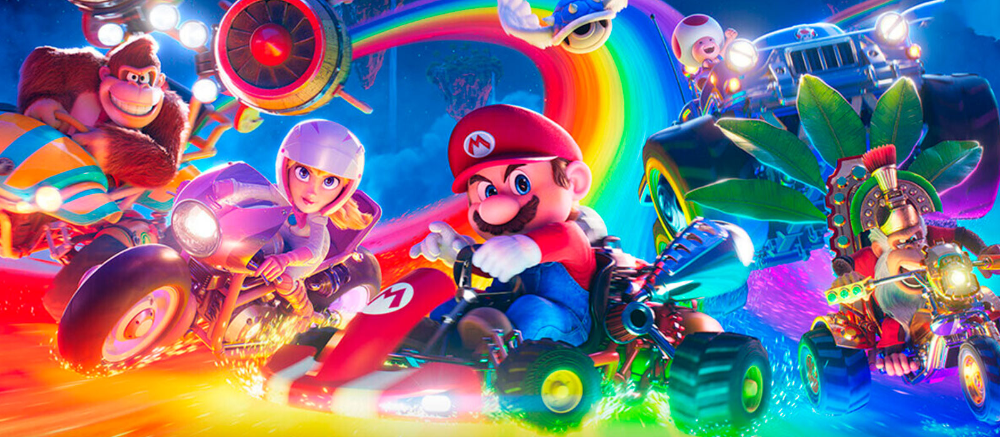
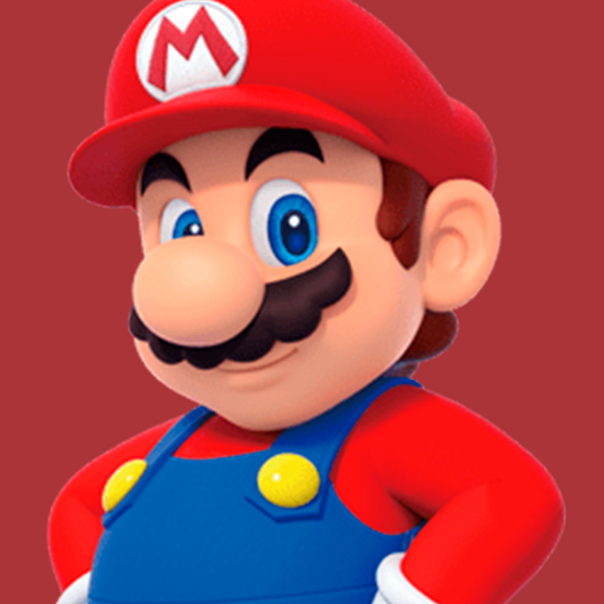
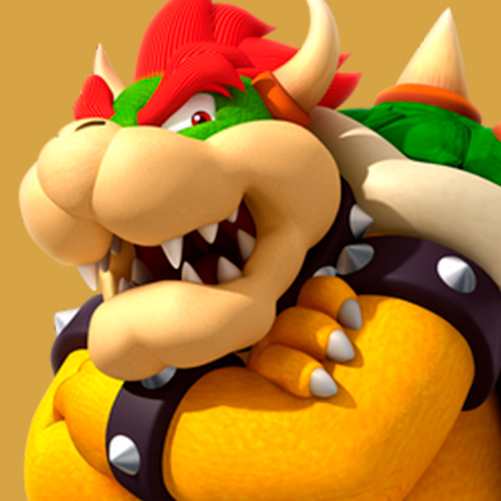
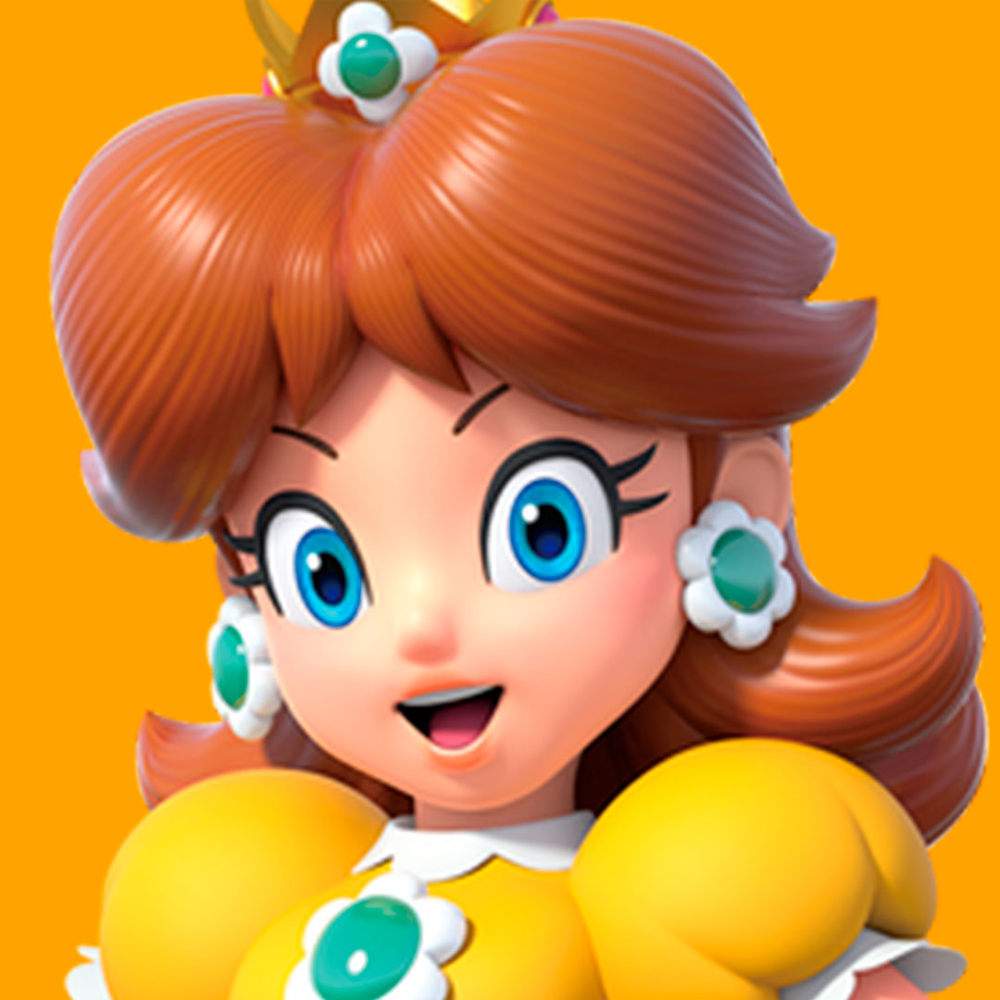
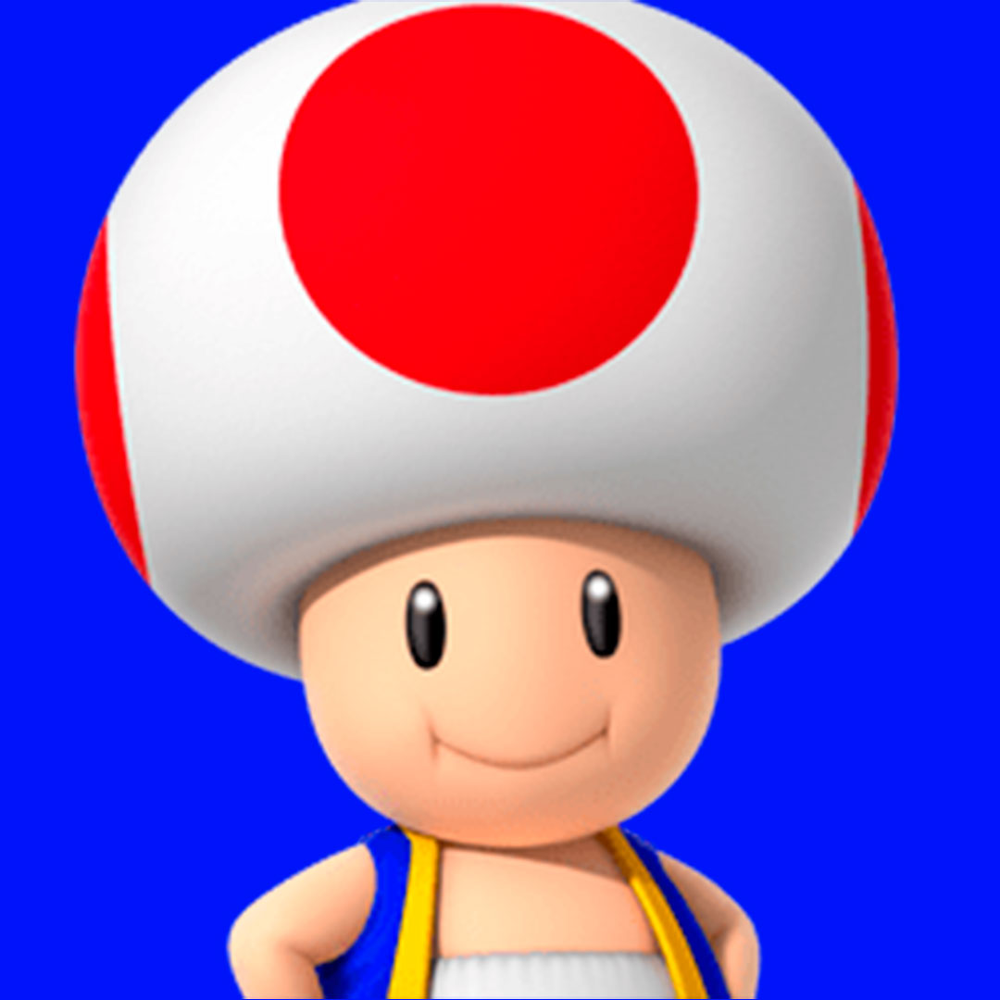
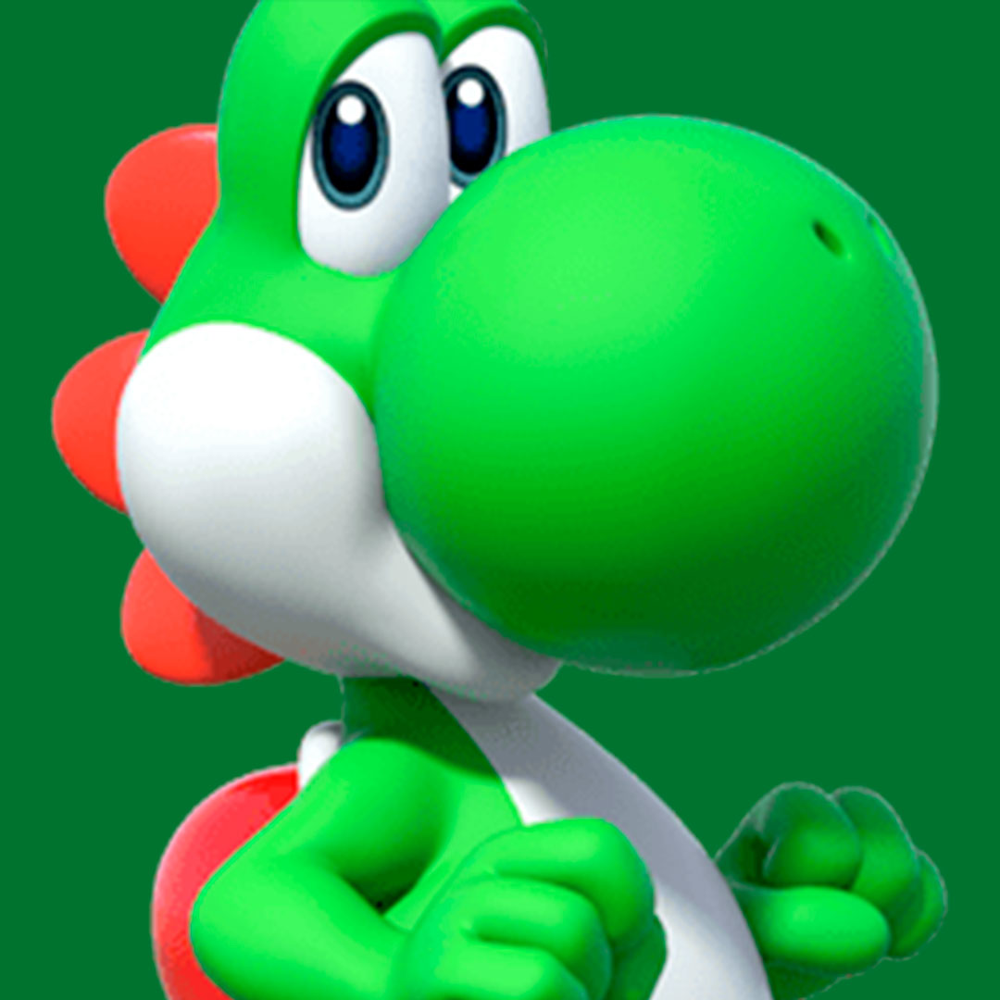
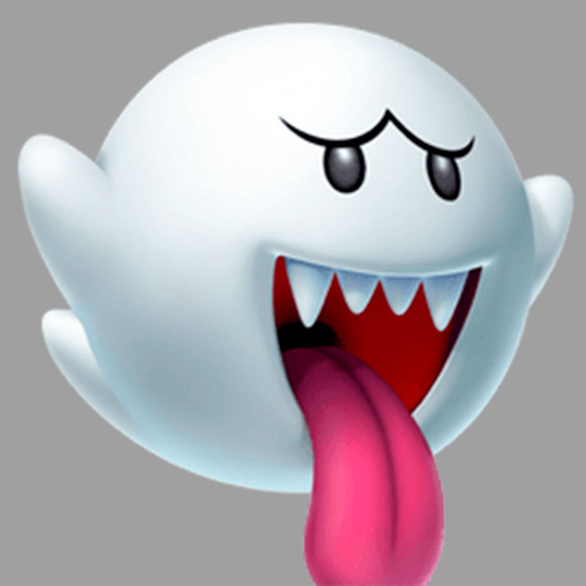

La película (The Super Mario Bros. Movie en inglés)Es una película animada CGI producida por Illumination en asociación con Nintendo y distribuida por Universal Pictures. Es la tercera adaptación cinematográfica de la franquicia de Mario de Nintendo, después de la película de anime japonesa de 1986, Super Mario Bros.: ¡La gran misión para rescatar a la princesa Peach! y la película de acción en vivo de 1993, Super Mario Bros.






